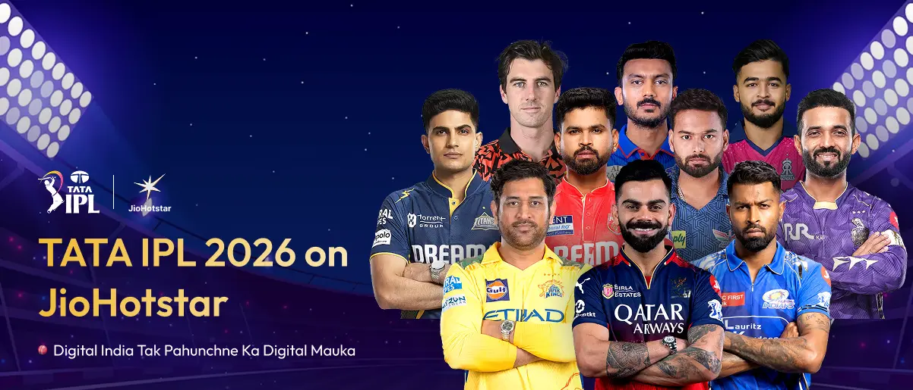

"As three states are scheduled to undergo State Assembly elections during this period, the full schedule of the tournament will be announced once the poll dates are announced," BCCI said in a release. A total of 20 matches will be played across 10 venues in the first phase — Bengaluru, Mumbai, Guwahati, New Chandigarh, Lucknow, Kolkata, Chennai, Delhi, Ahmedabad and Hyderabad. BCCI also clarified that the matches in Bengaluru will depend on a final safety clearance from the authorities.
"The matches scheduled in Bengaluru are subject to clearance from the Expert Committee constituted by the Government of Karnataka. The committee will conduct a meeting and inspection of the M. Chinnaswamy Stadium on March 13, 2026, during which a full-scale mock demonstration of match-day arrangements will be carried out to assess the stadium’s preparedness for hosting IPL matches," BCCI said. During the first phase, the tournament will feature four double-headers, with afternoon games starting at 03:30 PM IST and evening matches at 07:30 PM IST. The first double-header of the season is scheduled for April 4, when Delhi Capitals face Mumbai Indians in the afternoon at the Arun Jaitley Stadium in Delhi, followed by Gujarat Titans taking on Rajasthan Royals at the Narendra Modi Stadium in Ahmedabad.
